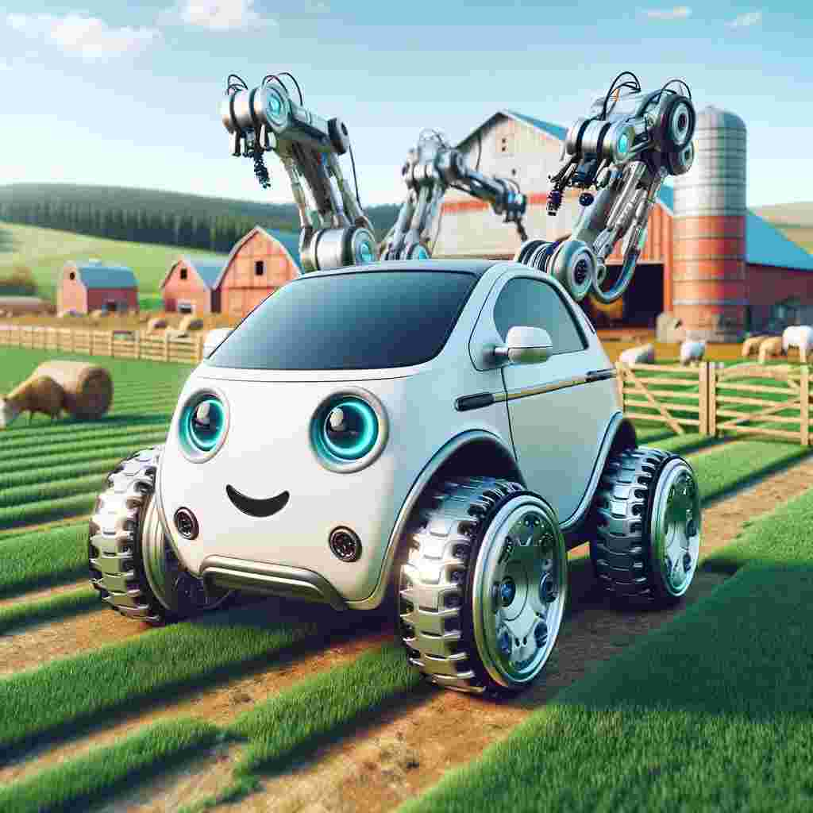
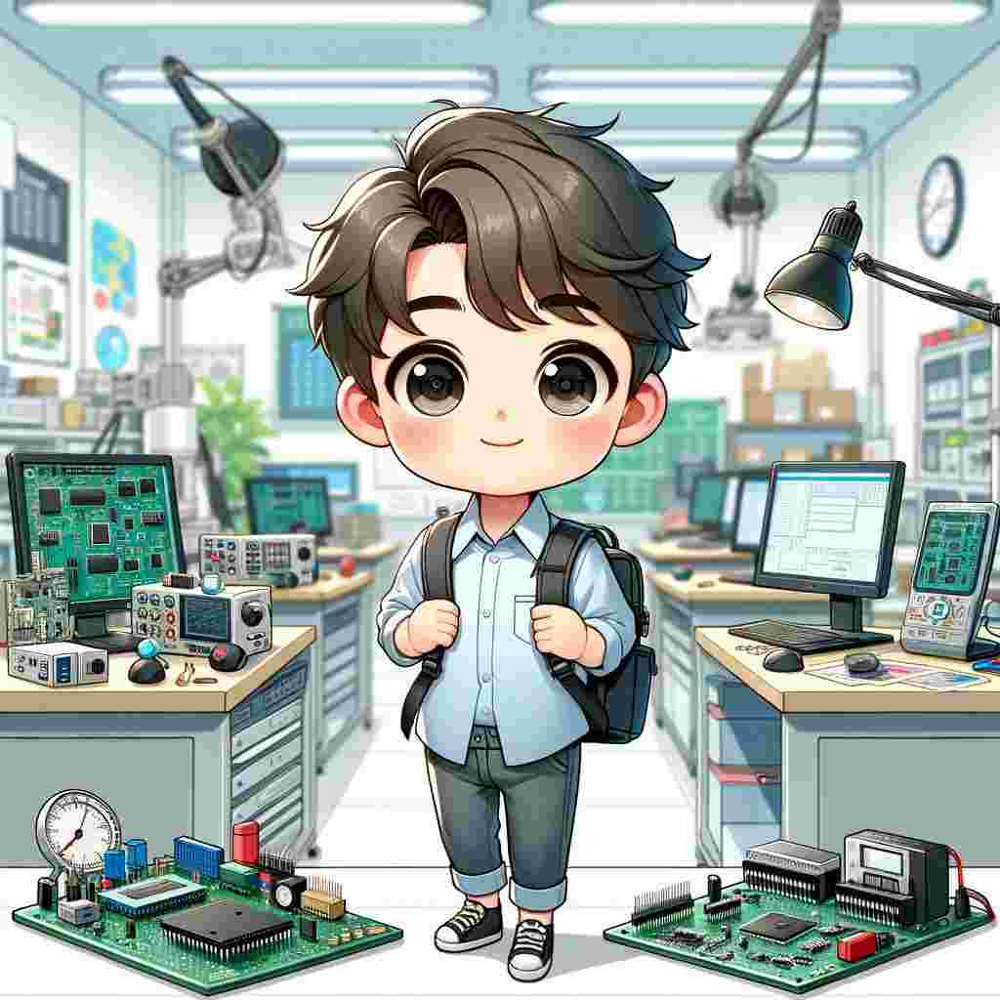
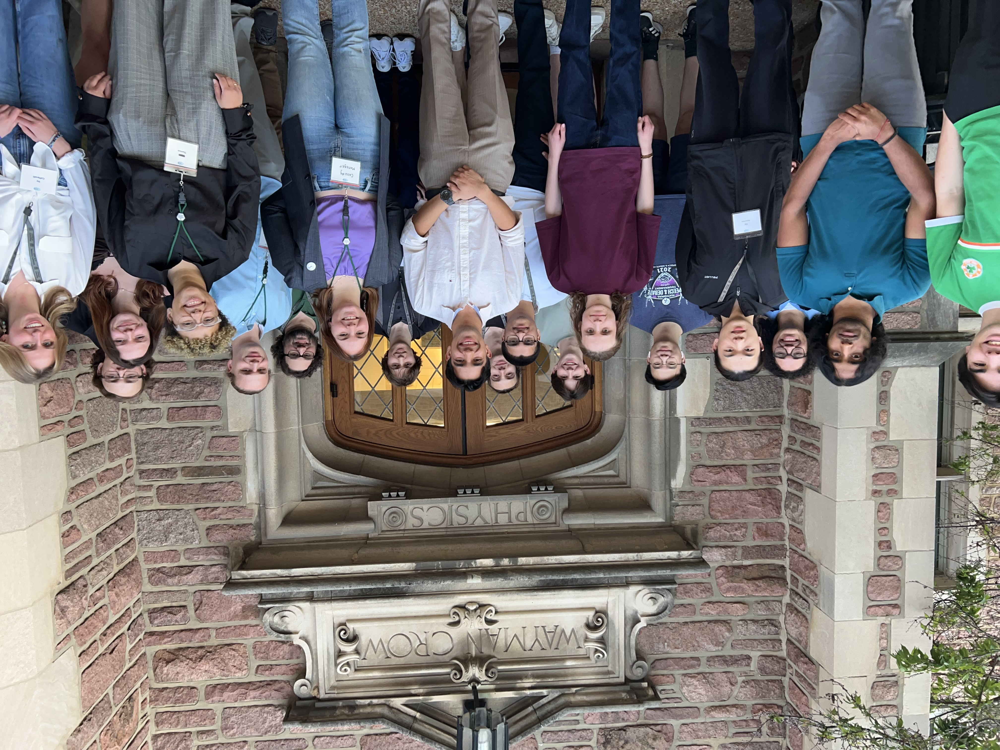

Cassidy Metzger
I am an undergraduate research assistant with the Physics Department at Washington University in St. Louis, working under Dr. Manel Errando in the field of High-Energy Astrophysics. I grew up 9 miles outside of Chicago, IL, a quick train ride away from Adler Planetarium, where my fascination with space began. I attended Oak Park and River Forest High School where I played softball for a number of years.
I am particularly fascinated by black holes. My current work resides in the field of experimental astrophysics and focuses on studying the relativistic jets emitted by Active Galactic Nuclei (AGN) using data from the WISE and eROSITA satellites. However, I am also interested in computational physics, particularly in developing models for accretion and particle acceleration within supermassive black holes (SMBH) and SMBH formation and evolution.
Active Galactic Nuclei (AGN): high-energy astrophysics (X-ray, gamma-ray), relativistic jets, modelling accretion and particle acceleration
Supermassive Black Holes (SMBH): SMBH formation and evolution, SMBH mergers, gravitational waves
Supermassive Black Holes (SMBH): SMBH formation and evolution, SMBH mergers, gravitational waves
üõ∞ updates

I will be starting
May 2024
I finished my undergrad studies in computer science at UTA.
May 2024
I will attend IROS 2023 in Detroit, Michigan .
October 2023
I will present at ISR 2023 in Stuttgart, Germany .
September 2023

The deformable object classification paper is accepted to ISR 2023!
June 2023
The multiplanar self-calibration paper is accepted to IROS 2023!
June 2023

My thesis proposal is approved by the Honors College!
June 2023
I am invited to review papers at CASE 2023 .
April 2023

The PerFC paper is accepted to FLAIRS-36!
March 2023
I am invited to review papers at UR 2023 .
February 2023

October 2022
I joined the Learning and Adaptive Robotics (LEARN) Lab at UTA.
August 2022

The IoTree paper is accepted to MobiCom 2022!
June 2022

iPlanter won prizes at GaTech RoboTech Hackathon 2022!
April 2022

I joined the Wireless and Sensor Systems Lab (WSSL) at UTA.
August 2021
I start my undergrad at the University of Texas at Arlington (UTA) .
August 2020
ü™ê research
I began conducting research in Manel Errando's lab in the fall of my sophomore year. I was drawn to the lab because of its focus on active galactic nuclei (AGN). Since I first learned about black holes at a planetarium show, I knew that I wanted to study the mysteries behind them. I was quickly captivated by the lab's focus on the high energy emissions from AGN. I have since presented my research at the Conference for Undergraduate Women in Physics (CUWiP) in 2023 and 2024, the Washington University Undergraduate Research Symposium (Spring 2023, Fall 2023), and the Washington University Physics Research Symposium (WUPRS) in 2023 where I was awarded first place. Below, I'll highlight my two major research projects.
Search for HBL-candidates in the eROSITA catalog
Spring 2023 - Present
Cassidy Metzger, Andrea Gokus, Manel Errando
[POSTER] [PDF]
Abstract: Active galactic nuclei (AGN) are active supermassive black holes that reside at galactic centers. Approximately 10% of AGN are capable of launching a collimated stream of matter via magnetic fields that consist of particles accelerated near the speed of light. This phenomenon is known as a relativistic jet. However, the mechanisms that power relativistic jets are primarily unknown. We theorize that these mechanisms are exaggerated in the case of extremely powerful jets. Thus, we aim to conduct a survey of the most powerful relativistic jets. We categorize a jet as “extremely powerful” when it reaches TeV energies. To do this, we enforce parameters in the X-ray and infrared wavelengths based on objects that are confirmed to be producing relativistic jets that reach TeV energies. Using these parameters, we develop an algorithm that searches through infrared and X-ray data to select sources that fall within the parameters set. In the future, we intend to use the outputs of this algorithm to construct a catalog that will serve as a target list for future gamma-ray observatories.
Image credit: Aurore Simonnet and NASA’s Goddard Space Flight Center
Note: Paper in progress.
Spring 2023 - Present
Cassidy Metzger, Andrea Gokus, Manel Errando
[POSTER] [PDF]
Abstract: Active galactic nuclei (AGN) are active supermassive black holes that reside at galactic centers. Approximately 10% of AGN are capable of launching a collimated stream of matter via magnetic fields that consist of particles accelerated near the speed of light. This phenomenon is known as a relativistic jet. However, the mechanisms that power relativistic jets are primarily unknown. We theorize that these mechanisms are exaggerated in the case of extremely powerful jets. Thus, we aim to conduct a survey of the most powerful relativistic jets. We categorize a jet as “extremely powerful” when it reaches TeV energies. To do this, we enforce parameters in the X-ray and infrared wavelengths based on objects that are confirmed to be producing relativistic jets that reach TeV energies. Using these parameters, we develop an algorithm that searches through infrared and X-ray data to select sources that fall within the parameters set. In the future, we intend to use the outputs of this algorithm to construct a catalog that will serve as a target list for future gamma-ray observatories.
Image credit: Aurore Simonnet and NASA’s Goddard Space Flight Center
Note: Paper in progress.
Studying Accretion onto an Intermediate-Mass Black Hole (IMBH)
Fall 2022
Cassidy Metzger, Andrea Gokus, Manel Errando
[POSTER]
Abstract: While all Active Galactic Nuclei (AGN) commonly vary in X-ray emission on short time scales, it has been noted by several papers that this flux variability seems to be inversely correlated with the mass of the black hole (e.g., Lu & Yu 2001; Papadakis 2004; McHardy et al. 2006). This correlation implies that black holes with greater variability are less massive. Therefore, if X-ray variability is great and the black hole is accreting near its Eddington limit, it can be inferred that this is a growing black hole. Our research focuses on a dataset of the AGN 2MASX J20082452-444095 that spans several years (2011-2019) and was collected with the X-ray telescope onboard the Swift satellite. We study the long-term X-ray variability of J2008 in order to understand the growth rate of its central black hole.
Image credit: Hotaka Shiokawa
Fall 2022
Cassidy Metzger, Andrea Gokus, Manel Errando
[POSTER]
Abstract: While all Active Galactic Nuclei (AGN) commonly vary in X-ray emission on short time scales, it has been noted by several papers that this flux variability seems to be inversely correlated with the mass of the black hole (e.g., Lu & Yu 2001; Papadakis 2004; McHardy et al. 2006). This correlation implies that black holes with greater variability are less massive. Therefore, if X-ray variability is great and the black hole is accreting near its Eddington limit, it can be inferred that this is a growing black hole. Our research focuses on a dataset of the AGN 2MASX J20082452-444095 that spans several years (2011-2019) and was collected with the X-ray telescope onboard the Swift satellite. We study the long-term X-ray variability of J2008 in order to understand the growth rate of its central black hole.
Image credit: Hotaka Shiokawa
üí´ society of physics students
I am the president of WashU's chapter of the Society of Physics Students (SPS). SPS is a national organization geared towards promoting undergraduate involvement in the field of physics. Our chapter contributes to this goal by providing WashU undergraduates interested in physics with information and resources. We also work hard to faciliate events that foster connections within the department as a whole. To learn more about our chapter as a whole, you can visit our Instagram. I became involved with SPS in January 2023 when I was elected as Vice President. During my term as VP, I focused on campus outreach and public relations. I ran our Instagram account and worked to increase our presence on campus by hosting a variety of events. During my term as VP, our chapter membership increased from 60 to 100 members. I was then elected President in January 2024. During my first semester as President, I instated two additional officer positions, Public Relations Chair and Event Coordination Chair, I also instated two boards beneath each of the officers focused on public outreach and event planning. Chapter membership continued to increase steadily during this time. Below, I'll highlight some of the major events that I directed during my time as an SPS officer.
Liquid Nitrogen Ice Cream Social
Fall 2023
Description: As a form of outreach, I designed a liquid nitrogen social event. The event was open to all WashU students and was designed to be a kind of spectacle. It was first hosted at the beginning of the 2023 Fall semester. The intention was to reach a wider audience of students. We certaintly saw success, serving approximately 100 students. The event was then hosted again at the end of the 2024 spring semester where approximately 80 students were served. Following both events, we witnessed a notable increase in chapter interest.
Fall 2023
Description: As a form of outreach, I designed a liquid nitrogen social event. The event was open to all WashU students and was designed to be a kind of spectacle. It was first hosted at the beginning of the 2023 Fall semester. The intention was to reach a wider audience of students. We certaintly saw success, serving approximately 100 students. The event was then hosted again at the end of the 2024 spring semester where approximately 80 students were served. Following both events, we witnessed a notable increase in chapter interest.
Physics Research Panel
Fall 2023
Description: The event featured a variety of WashU Physics professors. Each presented brief descriptions of their research before answering questions from panelists and then the student body in attendance. The event was designed to give undergraduate students a look into the world of physics reseearch and present them with the opportunities available to them. Following the event, we were excited to report an increase in undergraduate reserch involvement.
Fall 2023
Description: The event featured a variety of WashU Physics professors. Each presented brief descriptions of their research before answering questions from panelists and then the student body in attendance. The event was designed to give undergraduate students a look into the world of physics reseearch and present them with the opportunities available to them. Following the event, we were excited to report an increase in undergraduate reserch involvement.

Zone 12 Meeting
Spring 2024
[EVENT PROGRAM]
Description: As SPS is a national organization, collaboration between chapters is strongly encouraged. One of the ways that collaboration occurs is through meetings between chapters that are in the same zone. WashU, alongside the rest of Missouri schools, Kansas, and many Oklahoma schools fall into Zone 12. The meeting was hosted at WashU for the first time since 2008. The event was a great success. Beginning on a Friday, students got together for dinner followed by a physics-themed Jeporady game. Then, on Saturday, students navigated through a series of panels and lectures. The feedback from the event was overwhelmingly positive.
Spring 2024
[EVENT PROGRAM]
Description: As SPS is a national organization, collaboration between chapters is strongly encouraged. One of the ways that collaboration occurs is through meetings between chapters that are in the same zone. WashU, alongside the rest of Missouri schools, Kansas, and many Oklahoma schools fall into Zone 12. The meeting was hosted at WashU for the first time since 2008. The event was a great success. Beginning on a Friday, students got together for dinner followed by a physics-themed Jeporady game. Then, on Saturday, students navigated through a series of panels and lectures. The feedback from the event was overwhelmingly positive.
✨ teaching
Math and science, especially physics, were not subjects that came easily to me. For the majority of elementary school, middle school, and high school, I performed average at best in those classes. It was due to the teachers and tutors that recognized my passion, irregardless of my natural talent, and helped me along the way that I was able to learn math and physics in a way that worked for me. Today, I am passionate about teaching math and physics. I especially enjoy working with students who are struggling in those subjects. I firmly believe that all students have the potential to excel in STEM. Everyone learns in their own ways and through my own experiences as a student and a teacher, I've learned that many students who struggle in STEM fields simply learn differently than students who are naturally drawn to STEM subjects. As a teacher/tutor today, I make it my goal to find the best way to teach each of my students individually. At WashU, I am involved with teaching physics through WashU's Learning Center and the Physics Department directly.
Peer-Led Team Learning (PLTL)
Fall 2022 - Present
Description: I began working as a PLTL Leader the fall of my sophomore year. As a PLTL leader, I facilitate weekly group sessions for students in WashU's introductory physics sequence (Physics 191 and Physics 192). I work with a group of 8-15 students for two hours a week. We work through a series of problems that are above the level of the class and are designed to challenge students and force them to learn the material on a deeper level. I act a faciliator, guiding the students through the questions with the aim of teaching them how to work through the problems themselves. However, I do also regularly provide explanations and help when needed.
Fall 2022 - Present
Description: I began working as a PLTL Leader the fall of my sophomore year. As a PLTL leader, I facilitate weekly group sessions for students in WashU's introductory physics sequence (Physics 191 and Physics 192). I work with a group of 8-15 students for two hours a week. We work through a series of problems that are above the level of the class and are designed to challenge students and force them to learn the material on a deeper level. I act a faciliator, guiding the students through the questions with the aim of teaching them how to work through the problems themselves. However, I do also regularly provide explanations and help when needed.
Physics 191/192 Recitation Leader
Spring 2023 - Present
Description: As a physics recitation leader for the introductory physics sequence, I work with approximately 30 students for one hour a week. The students work in small groups while I walk around and answer questions. I also provide brief content reviews in a short lecture format as necessary.
Spring 2023 - Present
Description: As a physics recitation leader for the introductory physics sequence, I work with approximately 30 students for one hour a week. The students work in small groups while I walk around and answer questions. I also provide brief content reviews in a short lecture format as necessary.
Washington University Student Associate (WUSA)
Summer 2022 - Spring 2023
Description: As a WUSA, I worked with a cohort of 15 incoming first-years to help them acclimate to college. I assisted in organizing orientation week activities and met with my students for several hours each day during orientation week. During the school year, I hosted "WUSA Hours" for two hours each week. I would organize a variety of activities to help my students bond and generally just act as a resource for students. I regularly provided academic advice and discussed my own experiences as a student at WashU.
Summer 2022 - Spring 2023
Description: As a WUSA, I worked with a cohort of 15 incoming first-years to help them acclimate to college. I assisted in organizing orientation week activities and met with my students for several hours each day during orientation week. During the school year, I hosted "WUSA Hours" for two hours each week. I would organize a variety of activities to help my students bond and generally just act as a resource for students. I regularly provided academic advice and discussed my own experiences as a student at WashU.

Assistant softball coach
Summer 2022
Description: I worked as an assistant coach for the Chicago Ravens 12U Softball team. I helped run practices and develop lineups for games. I often worked with pitchers specifically by calling pitches during games, providing in-game coaching advice, and offering guidance during practices. However, of the wide array of tasks I undertook as a coach, the most important was ensuring that every player on the team was able to enjoy the game. I did my best to provide each player with the tools they needed to have fun and succeed, both in the game and in their endeavors outside of practice.
Summer 2022
Description: I worked as an assistant coach for the Chicago Ravens 12U Softball team. I helped run practices and develop lineups for games. I often worked with pitchers specifically by calling pitches during games, providing in-game coaching advice, and offering guidance during practices. However, of the wide array of tasks I undertook as a coach, the most important was ensuring that every player on the team was able to enjoy the game. I did my best to provide each player with the tools they needed to have fun and succeed, both in the game and in their endeavors outside of practice.
üåå resources
all software releases of the above projects can also be found here!üñºÔ∏è gallery
not all about robots, but also some happy moments of my life.me and tuan also met new friends at iros (2023)
first time playing football on snow (2022)
i saw school of fish at georgia aquarium (2021)
these crazy boys from ptnk i1720 (2020)

wolfram summer research program fieldtrip (2019)
my sister started her mba (2018)
my boys from tđn maths team (2017)
‎